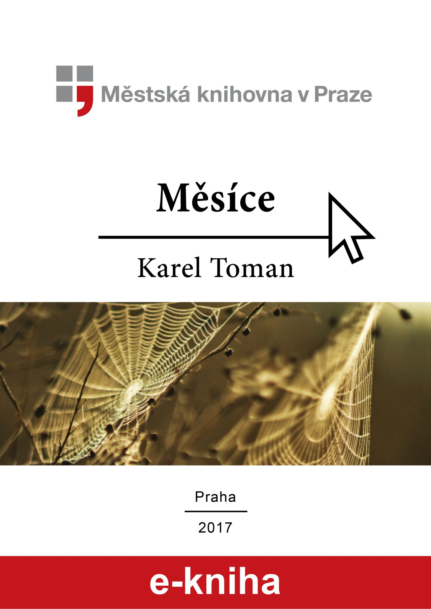

Tiráž

Měsíce
Karel Toman
Znění tohoto textu vychází z díla Měsíce tak, jak bylo vydáno nakladatelstvím Český spisovatel v roce 1997 (TOMAN, Karel. Měsíce. 1. vyd. Praha: Český spisovatel, 1997. sv. 2.).
§
Text díla (Karel Toman: Měsíce), publikovaného Městskou knihovnou v Praze, je vázán autorskými právy a jeho použití je definováno Autorským zákonem č. 121/2000 Sb.
Citační záznam této e-knihy:
TOMAN, Karel. Měsíce [online]. V MKP 1. vyd. Praha: Městská knihovna v Praze, 2017 [aktuální datum citace
e-knihy – př. cit. rrrr-mm-dd]. ISBN 978-80-7532-334-7 (epub). Dostupné z:
http://web2.mlp.cz/koweb/00/04/27/71/73/mesice.epub.

Vydání (obálka, upoutávka, citační stránka a tiráž), jehož autorem je Městská knihovna v Praze, podléhá licenci Creative Commons Uveďte autora-Nevyužívejte dílo komerčně-Zachovejte licenci 3.0 Česko.
Verze 1.0 z 6. 1. 2017.
Karel Toman
Měsíce
Edice E-knihovna
Redakce Jaroslava Bednářová
Vydala Městská knihovna v Praze
Mariánské nám. 1, 115 72 Praha 1
V MKP 1. vydání
Verze 1.0 z 6. 1. 2017
ISBN 978-80-7532-334-7 (epub)